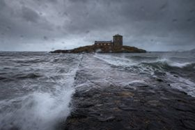
PH-001 (locality-views)
An Clachan Dubh Tidal Causeway Overtopped by Storm Fergus Surf (Sat 14 Nov Dusk)
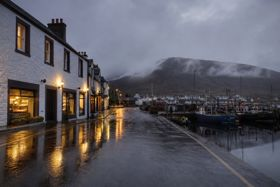
PH-002 (locality-views)
Shore Street & Harbour Front, Ullapool in November Rain
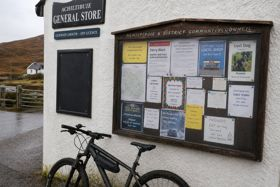
PH-003 (locality-views)
Polglass General Stores Exterior Parish Noticeboard, Achiltibuie
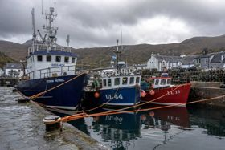
PH-004 (locality-views)
MV Creag Dhubh & Inshore Boats Double-Warped in Ullapool Inner Basin
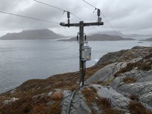
PH-005 (locality-views)
SSEN 11kV Overhead-to-Subsea Transition Pole COIG-11KV-09 Above Polbain
PH-006 (locality-views)
Street & Shopfront Documentary Plate — The Coigach Smokehouse & Pier Larder, 4 Old Quay
PH-007 (locality-views)
Street & Shopfront Documentary Plate — An Clachan Tearoom & Bakery, 1 Causeway Brae, Pol
PH-008 (locality-views)
Street & Shopfront Documentary Plate — The Summer Isles Hotel & Dining Room, Main Brae,
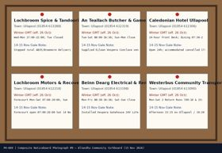
PH-009 (locality-views)
Composite Noticeboard Photograph #9 — Altandhu Community Corkboard (15 Nov 2026)
PH-010 (locality-views)
Street & Shopfront Documentary Plate — The Ferry Boat Inn, 22 Shore Street, Ullapool, IV
PH-011 (locality-views)
Street & Shopfront Documentary Plate — Seaforth Chippy & Seafood Bar, 6 Quay Street, Ull
PH-012 (locality-views)
Street & Shopfront Documentary Plate — Cultag Espresso & Bakehouse, 14 Argyle Street, Ul
PH-013 (locality-views)
Street & Shopfront Documentary Plate — The Arch Inn & Bistro, 10 West Shore Street, Ulla
PH-014 (locality-views)
Street & Shopfront Documentary Plate — Ceilidh Place Bookshop Café & Rooms, 14-18 West A
PH-015 (locality-views)
Street & Shopfront Documentary Plate — Lochbroom Spice & Tandoori, 31 Market Street, Ull
PH-016 (locality-views)
Street & Shopfront Documentary Plate — Polglass General Stores & Post Office, Polglass R
PH-017 (locality-views)
Street & Shopfront Documentary Plate — MacIver's Harbour Grocers & Provisions, 9-11 Argy
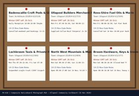
PH-018 (locality-views)
Composite Noticeboard Photograph #18 — Ullapool Community Corkboard (15 Nov 2026)
PH-019 (locality-views)
Street & Shopfront Documentary Plate — Quayside Fishmongers & Ice Co., Unit 2 Fishmarket
PH-020 (locality-views)
Street & Shopfront Documentary Plate — An Teallach Butcher & Game Dealer, 25 Market Stre
PH-021 (locality-views)
Street & Shopfront Documentary Plate — West Coast Delicatessen & Wine Vault, 4 Mill Stre
PH-022 (locality-views)
Street & Shopfront Documentary Plate — Broom Bakehouse & Flour Mill, Unit 5 Morefield In
PH-023 (locality-views)
Street & Shopfront Documentary Plate — Tigh na Mara B&B, 9 Old Quay Road, Polbain, IV26
PH-024 (locality-views)
Street & Shopfront Documentary Plate — Badenscallie Croft Pods & Glamping, Croft 14 Bade
PH-025 (locality-views)
Street & Shopfront Documentary Plate — Caledonian Hotel Ullapool, Quay Street, Ullapool,
PH-026 (locality-views)
Street & Shopfront Documentary Plate — Broomview Guest House, 29 Garve Road, Ullapool, I
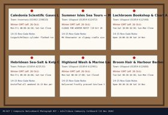
PH-027 (locality-views)
Composite Noticeboard Photograph #27 — Achiltibuie Community Corkboard (15 Nov 2026)
PH-028 (locality-views)
Street & Shopfront Documentary Plate — Minch Marine Chandlery & Rigging, 2 Quay Street,
PH-029 (locality-views)
Street & Shopfront Documentary Plate — Ullapool Builders Merchant & Lime Store, Unit 1 M
PH-030 (locality-views)
Street & Shopfront Documentary Plate — Lochbroom Motors & Recovery 24/7, Garve Road (A83
PH-031 (locality-views)
Street & Shopfront Documentary Plate — Coigach Heating, Plumbing & Oil Services, 7 Main
PH-032 (locality-views)
Street & Shopfront Documentary Plate — Highland Refrigeration & Cryo-Plant Ltd., Unit 8
PH-033 (locality-views)
Street & Shopfront Documentary Plate — Caledonia Scientific Gases Ltd. (Northern Depot),
PH-034 (locality-views)
Street & Shopfront Documentary Plate — Ross-Shire Fuel Oils & Marine Bunkers, Harbour Ta
PH-035 (locality-views)
Street & Shopfront Documentary Plate — Beinn Dearg Electrical & Renewables, Unit 4 Moref
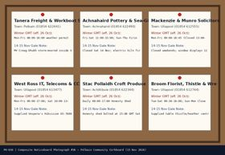
PH-036 (locality-views)
Composite Noticeboard Photograph #36 — Polbain Community Corkboard (15 Nov 2026)
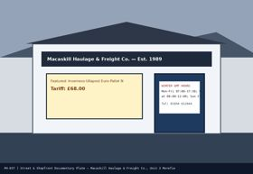
PH-037 (locality-views)
Street & Shopfront Documentary Plate — Macaskill Haulage & Freight Co., Unit 3 Morefield
PH-038 (locality-views)
Street & Shopfront Documentary Plate — Summer Isles Sea Tours — MV Shearwater, Pier Kios
PH-039 (locality-views)
Street & Shopfront Documentary Plate — Lochbroom Taxis & Private Hire, Station Brae Offi
PH-040 (locality-views)
Street & Shopfront Documentary Plate — Westerbus Community Transport & Route 61B, Depot
PH-041 (locality-views)
Street & Shopfront Documentary Plate — Broom Cycles & Kayak Outfitter, 17 Market Street,
PH-042 (locality-views)
Street & Shopfront Documentary Plate — Tanera Freight & Workboat Services (MV Creag Dhub
PH-043 (locality-views)
Street & Shopfront Documentary Plate — Lochbroom Bookshop & Chart Agency, 16 Quay Street
PH-044 (locality-views)
Street & Shopfront Documentary Plate — North West Mountain & Munro Gear, 7 Shore Street,
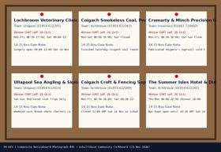
PH-045 (locality-views)
Composite Noticeboard Photograph #45 — Achiltibuie Community Corkboard (15 Nov 2026)
PH-046 (locality-views)
Street & Shopfront Documentary Plate — Rhue Art & Lighthouse Studio Gallery, Rhue Point
PH-047 (locality-views)
Street & Shopfront Documentary Plate — Achnahaird Pottery & Sea-Glaze Kiln, 2 Achnahaird
PH-048 (locality-views)
Street & Shopfront Documentary Plate — Hebridean Sea-Salt & Kelp Co., Unit 1 Pier Store
PH-049 (locality-views)
Street & Shopfront Documentary Plate — Broom Hardware, Keys & Ironmongery, 20 Market Str
PH-050 (locality-views)
Street & Shopfront Documentary Plate — Silver Darlings Gift & Tartan Emporium, 12 Shore
PH-051 (locality-views)
Street & Shopfront Documentary Plate — Lochbroom Veterinary Clinic, 8 Mill Street, Ullap
PH-052 (locality-views)
Street & Shopfront Documentary Plate — Mackenzie & Munro Solicitors and Estate Agents, 3
PH-053 (locality-views)
Street & Shopfront Documentary Plate — Highland Wash & Marine Laundry, Unit 6 Morefield
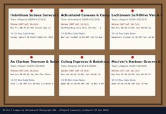
PH-054 (locality-views)
Composite Noticeboard Photograph #54 — Ullapool Community Corkboard (15 Nov 2026)
PH-055 (locality-views)
Street & Shopfront Documentary Plate — Northern Horizons Optical & Hearing, 11 Mill Stre
PH-056 (locality-views)
Street & Shopfront Documentary Plate — Coigach Smokeless Coal, Peat & Logs, Yard 2 Polgl
PH-057 (locality-views)
Street & Shopfront Documentary Plate — West Ross IT, Telecoms & CCTV Services, Unit 9 Mo
PH-058 (locality-views)
Street & Shopfront Documentary Plate — Broom Hair & Harbour Barber, 23 Market Street, Ul
PH-059 (locality-views)
Street & Shopfront Documentary Plate — Ullapool Physiotherapy & Sports Clinic, 2 North R
PH-060 (locality-views)
Street & Shopfront Documentary Plate — Hebridean Subsea Surveys Ltd., Suite 3 Pierhead H
PH-061 (locality-views)
Street & Shopfront Documentary Plate — Cromarty & Minch Precision Glassblowing, Unit 7 B
PH-062 (locality-views)
Street & Shopfront Documentary Plate — Stac Pollaidh Croft Produce & Eggs, Croft 6 Achil
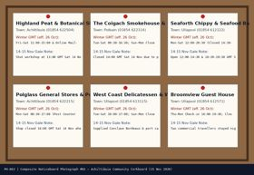
PH-063 (locality-views)
Composite Noticeboard Photograph #63 — Achiltibuie Community Corkboard (15 Nov 2026)
PH-064 (locality-views)
Street & Shopfront Documentary Plate — Lochbroom Smokehouse Hampers Direct, Unit 11 More
PH-065 (locality-views)
Street & Shopfront Documentary Plate — Achnahaird Caravan & Camper Aire, Bay Road, Achna
PH-066 (locality-views)
Street & Shopfront Documentary Plate — Ullapool Sea Angling & Skate Charter (MV Northern
PH-067 (locality-views)
Street & Shopfront Documentary Plate — Broom Florist, Thistle & Wreath, 5 Market Street,
PH-068 (locality-views)
Street & Shopfront Documentary Plate — An Cala Picture Framing & Antiquarian Prints, 18
PH-069 (locality-views)
Street & Shopfront Documentary Plate — Highland Peat & Botanical Skincare, Unit 2 Old Sm
PH-070 (locality-views)
Street & Shopfront Documentary Plate — Lochbroom Self-Drive Van & 4x4 Hire, Garve Road F
PH-071 (locality-views)
Street & Shopfront Documentary Plate — Coigach Croft & Fencing Supplies, Yard 1 Polglass
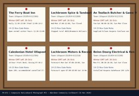
PH-072 (locality-views)
Composite Noticeboard Photograph #72 — Aberdeen Community Corkboard (15 Nov 2026)
PH-073 (locality-views)
Street & Shopfront Documentary Plate — Pritchard MacNab Chartered Accountants, 14 Ardros
PH-074 (locality-views)
Street & Shopfront Documentary Plate — The Coigach Smokehouse & Pier Larder, 4 Old Quay
PH-075 (locality-views)
Street & Shopfront Documentary Plate — An Clachan Tearoom & Bakery, 1 Causeway Brae, Pol
PH-076 (locality-views)
Street & Shopfront Documentary Plate — The Summer Isles Hotel & Dining Room, Main Brae,
PH-077 (locality-views)
Street & Shopfront Documentary Plate — Am Fuaran Bar & Creel Kitchen, Shorefront, Altand
PH-078 (locality-views)
Street & Shopfront Documentary Plate — The Ferry Boat Inn, 22 Shore Street, Ullapool, IV
PH-079 (locality-views)
Street & Shopfront Documentary Plate — Seaforth Chippy & Seafood Bar, 6 Quay Street, Ull
PH-080 (locality-views)
Street & Shopfront Documentary Plate — Cultag Espresso & Bakehouse, 14 Argyle Street, Ul
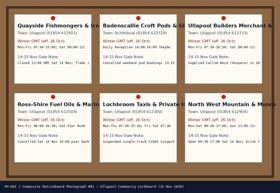
PH-081 (locality-views)
Composite Noticeboard Photograph #81 — Ullapool Community Corkboard (15 Nov 2026)
PH-082 (locality-views)
Street & Shopfront Documentary Plate — Ceilidh Place Bookshop Café & Rooms, 14-18 West A
PH-083 (locality-views)
Street & Shopfront Documentary Plate — Lochbroom Spice & Tandoori, 31 Market Street, Ull
PH-084 (locality-views)
Street & Shopfront Documentary Plate — Polglass General Stores & Post Office, Polglass R
PH-085 (locality-views)
Street & Shopfront Documentary Plate — MacIver's Harbour Grocers & Provisions, 9-11 Argy
PH-086 (locality-views)
Street & Shopfront Documentary Plate — Lochbroom Pharmacy & Dispensing Chemist, 19 Shore
PH-087 (locality-views)
Street & Shopfront Documentary Plate — Quayside Fishmongers & Ice Co., Unit 2 Fishmarket
PH-088 (locality-views)
Street & Shopfront Documentary Plate — An Teallach Butcher & Game Dealer, 25 Market Stre
PH-089 (locality-views)
Street & Shopfront Documentary Plate — West Coast Delicatessen & Wine Vault, 4 Mill Stre
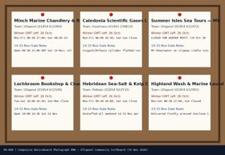
PH-090 (locality-views)
Composite Noticeboard Photograph #90 — Ullapool Community Corkboard (15 Nov 2026)
PH-091 (locality-views)
Street & Shopfront Documentary Plate — Tigh na Mara B&B, 9 Old Quay Road, Polbain, IV26
PH-092 (locality-views)
Street & Shopfront Documentary Plate — Badenscallie Croft Pods & Glamping, Croft 14 Bade
PH-093 (locality-views)
Street & Shopfront Documentary Plate — Caledonian Hotel Ullapool, Quay Street, Ullapool,
PH-094 (locality-views)
Street & Shopfront Documentary Plate — Broomview Guest House, 29 Garve Road, Ullapool, I
PH-095 (locality-views)
Street & Shopfront Documentary Plate — Coigach Walkers' Bunkhouse, Hydroponicum Lane, Ac
PH-096 (locality-views)
Street & Shopfront Documentary Plate — Minch Marine Chandlery & Rigging, 2 Quay Street,
PH-097 (locality-views)
Street & Shopfront Documentary Plate — Ullapool Builders Merchant & Lime Store, Unit 1 M
PH-098 (locality-views)
Street & Shopfront Documentary Plate — Lochbroom Motors & Recovery 24/7, Garve Road (A83
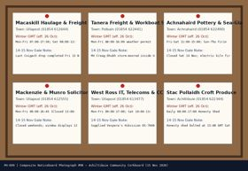
PH-099 (locality-views)
Composite Noticeboard Photograph #99 — Achiltibuie Community Corkboard (15 Nov 2026)
PH-100 (locality-views)
Street & Shopfront Documentary Plate — Highland Refrigeration & Cryo-Plant Ltd., Unit 8
PH-101 (locality-views)
Street & Shopfront Documentary Plate — Caledonia Scientific Gases Ltd. (Northern Depot),
PH-102 (locality-views)
Street & Shopfront Documentary Plate — Ross-Shire Fuel Oils & Marine Bunkers, Harbour Ta
PH-103 (locality-views)
Street & Shopfront Documentary Plate — Beinn Dearg Electrical & Renewables, Unit 4 Moref
PH-104 (locality-views)
Street & Shopfront Documentary Plate — Polbain Boatyard & Outboard Slip, Old Quay Road,
PH-105 (locality-views)
Street & Shopfront Documentary Plate — Macaskill Haulage & Freight Co., Unit 3 Morefield
PH-106 (locality-views)
Street & Shopfront Documentary Plate — Summer Isles Sea Tours — MV Shearwater, Pier Kios
PH-107 (locality-views)
Street & Shopfront Documentary Plate — Lochbroom Taxis & Private Hire, Station Brae Offi
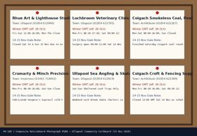
PH-108 (locality-views)
Composite Noticeboard Photograph #108 — Ullapool Community Corkboard (15 Nov 2026)
PH-109 (locality-views)
Street & Shopfront Documentary Plate — Broom Cycles & Kayak Outfitter, 17 Market Street,
PH-110 (locality-views)
Street & Shopfront Documentary Plate — Tanera Freight & Workboat Services (MV Creag Dhub
PH-111 (locality-views)
Street & Shopfront Documentary Plate — Lochbroom Bookshop & Chart Agency, 16 Quay Street
PH-112 (locality-views)
Street & Shopfront Documentary Plate — North West Mountain & Munro Gear, 7 Shore Street,
PH-113 (locality-views)
Street & Shopfront Documentary Plate — Coigach Woollens & Handloom Studio, Old Schoolhou
PH-114 (locality-views)
Street & Shopfront Documentary Plate — Rhue Art & Lighthouse Studio Gallery, Rhue Point
PH-115 (locality-views)
Street & Shopfront Documentary Plate — Achnahaird Pottery & Sea-Glaze Kiln, 2 Achnahaird
PH-116 (locality-views)
Street & Shopfront Documentary Plate — Hebridean Sea-Salt & Kelp Co., Unit 1 Pier Store
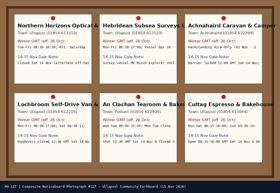
PH-117 (locality-views)
Composite Noticeboard Photograph #117 — Ullapool Community Corkboard (15 Nov 2026)
PH-118 (locality-views)
Street & Shopfront Documentary Plate — Silver Darlings Gift & Tartan Emporium, 12 Shore
PH-119 (locality-views)
Street & Shopfront Documentary Plate — Lochbroom Veterinary Clinic, 8 Mill Street, Ullap
PH-120 (locality-views)
Street & Shopfront Documentary Plate — Mackenzie & Munro Solicitors and Estate Agents, 3
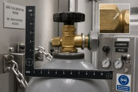
PH-121 (forensic-plates)
CSI Macro Plate: Cylinder CYL-CO-02 BS 341 Left-Hand Valve & 0.82mm Notch
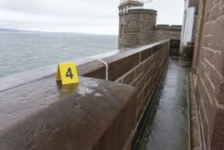
PH-122 (forensic-plates)
CSI Plate: 1883 Red Torridonian Sandstone Parapet & Fresh White Lime Putty on North Stor
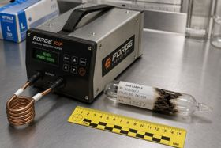
PH-123 (forensic-plates)
CSI Plate: Portable 2.10 kW Induction Heater PLH-1200 & Heat-Fused Ampoule Label ...EF-1
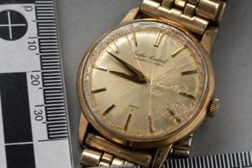
PH-124 (forensic-plates)
CSI Macro Plate: Victim's Crushed 1968 Gold Zenith Watch Stopped at 21:48 with Krytox Tr
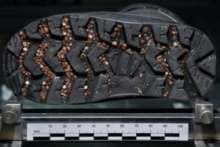
PH-125 (forensic-plates)
CSI Lab Plate: Boot S-07-B1 Lugged Sole Retaining 31 Red Sandstone & 19 Uncarbonated Lim
PH-126 (forensic-plates)
[OFFICIAL SCENE / LAB EVIDENCE PLATE] PH-126: CCTV CAM-03 Corridor Still — OSD 22:22:32
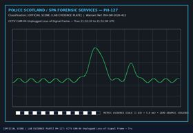
PH-127 (forensic-plates)
[OFFICIAL SCENE / LAB EVIDENCE PLATE] PH-127: CCTV CAM-04 Unplugged Loss-of-Signal Frame
PH-128 (forensic-plates)
[OFFICIAL SCENE / LAB EVIDENCE PLATE] PH-128: Sub-Basement Paxton Reader ACC-B1 Audit Ca
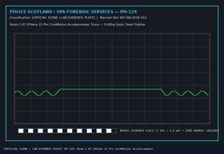
PH-129 (forensic-plates)
[OFFICIAL SCENE / LAB EVIDENCE PLATE] PH-129: Room 1-07 iPhone 15 Pro CoreMotion Acceler
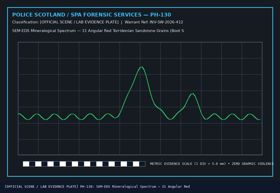
PH-130 (forensic-plates)
[OFFICIAL SCENE / LAB EVIDENCE PLATE] PH-130: SEM-EDS Mineralogical Spectrum — 31 Angula
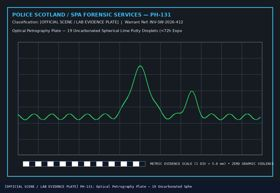
PH-131 (forensic-plates)
[OFFICIAL SCENE / LAB EVIDENCE PLATE] PH-131: Optical Petrography Plate — 19 Uncarbonate
PH-132 (forensic-plates)
[OFFICIAL SCENE / LAB EVIDENCE PLATE] PH-132: GC-IRMS Clumped Isotope Chromatogram — Amp
PH-133 (forensic-plates)
[OFFICIAL SCENE / LAB EVIDENCE PLATE] PH-133: FTIR Micro-Spectroscopy — 18 ug Krytox GPL
PH-134 (forensic-plates)
[OFFICIAL SCENE / LAB EVIDENCE PLATE] PH-134: Torque Profilometry Scan — BS 341 #4 Brass
PH-135 (forensic-plates)
[OFFICIAL SCENE / LAB EVIDENCE PLATE] PH-135: Raigmore CO-Oximetry Printout — Victim HbC
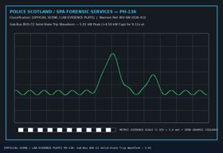
PH-136 (forensic-plates)
[OFFICIAL SCENE / LAB EVIDENCE PLATE] PH-136: Sub-Bus BUS-C2 Solid-State Trip Waveform —
PH-137 (forensic-plates)
[OFFICIAL SCENE / LAB EVIDENCE PLATE] PH-137: B1-04 Purge Decay Curve — 16,000 ppm CO Pu
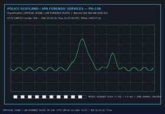
PH-138 (forensic-plates)
[OFFICIAL SCENE / LAB EVIDENCE PLATE] PH-138: CCTV CAM-03 Corridor Still — OSD 22:22:32
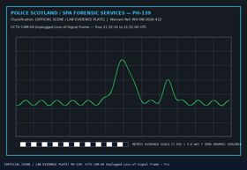
PH-139 (forensic-plates)
[OFFICIAL SCENE / LAB EVIDENCE PLATE] PH-139: CCTV CAM-04 Unplugged Loss-of-Signal Frame
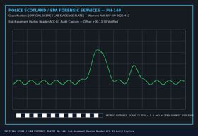
PH-140 (forensic-plates)
[OFFICIAL SCENE / LAB EVIDENCE PLATE] PH-140: Sub-Basement Paxton Reader ACC-B1 Audit Ca
PH-141 (forensic-plates)
[OFFICIAL SCENE / LAB EVIDENCE PLATE] PH-141: Room 1-07 iPhone 15 Pro CoreMotion Acceler
PH-142 (forensic-plates)
[OFFICIAL SCENE / LAB EVIDENCE PLATE] PH-142: SEM-EDS Mineralogical Spectrum — 31 Angula
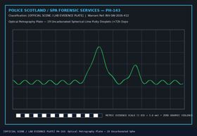
PH-143 (forensic-plates)
[OFFICIAL SCENE / LAB EVIDENCE PLATE] PH-143: Optical Petrography Plate — 19 Uncarbonate
PH-144 (forensic-plates)
[OFFICIAL SCENE / LAB EVIDENCE PLATE] PH-144: GC-IRMS Clumped Isotope Chromatogram — Amp
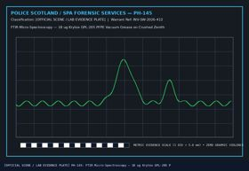
PH-145 (forensic-plates)
[OFFICIAL SCENE / LAB EVIDENCE PLATE] PH-145: FTIR Micro-Spectroscopy — 18 ug Krytox GPL
PH-146 (forensic-plates)
[OFFICIAL SCENE / LAB EVIDENCE PLATE] PH-146: Torque Profilometry Scan — BS 341 #4 Brass
PH-147 (forensic-plates)
[OFFICIAL SCENE / LAB EVIDENCE PLATE] PH-147: Raigmore CO-Oximetry Printout — Victim HbC
PH-148 (forensic-plates)
[OFFICIAL SCENE / LAB EVIDENCE PLATE] PH-148: Sub-Bus BUS-C2 Solid-State Trip Waveform —
PH-149 (forensic-plates)
[OFFICIAL SCENE / LAB EVIDENCE PLATE] PH-149: B1-04 Purge Decay Curve — 16,000 ppm CO Pu
PH-150 (forensic-plates)
[OFFICIAL SCENE / LAB EVIDENCE PLATE] PH-150: CCTV CAM-03 Corridor Still — OSD 22:22:32
PH-151 (forensic-plates)
[OFFICIAL SCENE / LAB EVIDENCE PLATE] PH-151: CCTV CAM-04 Unplugged Loss-of-Signal Frame
PH-152 (forensic-plates)
[OFFICIAL SCENE / LAB EVIDENCE PLATE] PH-152: Sub-Basement Paxton Reader ACC-B1 Audit Ca
PH-153 (forensic-plates)
[OFFICIAL SCENE / LAB EVIDENCE PLATE] PH-153: Room 1-07 iPhone 15 Pro CoreMotion Acceler
PH-154 (forensic-plates)
[OFFICIAL SCENE / LAB EVIDENCE PLATE] PH-154: SEM-EDS Mineralogical Spectrum — 31 Angula
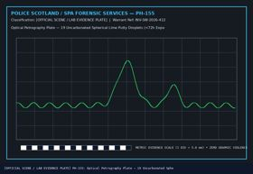
PH-155 (forensic-plates)
[OFFICIAL SCENE / LAB EVIDENCE PLATE] PH-155: Optical Petrography Plate — 19 Uncarbonate
PH-156 (forensic-plates)
[FORENSIC RECONSTRUCTION DIAGRAM] PH-156: GC-IRMS Clumped Isotope Chromatogram — Ampoule
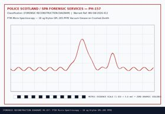
PH-157 (forensic-plates)
[FORENSIC RECONSTRUCTION DIAGRAM] PH-157: FTIR Micro-Spectroscopy — 18 ug Krytox GPL-205
PH-158 (forensic-plates)
[FORENSIC RECONSTRUCTION DIAGRAM] PH-158: Torque Profilometry Scan — BS 341 #4 Brass Spi
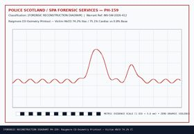
PH-159 (forensic-plates)
[FORENSIC RECONSTRUCTION DIAGRAM] PH-159: Raigmore CO-Oximetry Printout — Victim HbCO 74
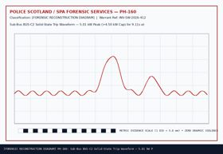
PH-160 (forensic-plates)
[FORENSIC RECONSTRUCTION DIAGRAM] PH-160: Sub-Bus BUS-C2 Solid-State Trip Waveform — 5.0
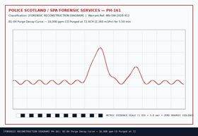
PH-161 (forensic-plates)
[FORENSIC RECONSTRUCTION DIAGRAM] PH-161: B1-04 Purge Decay Curve — 16,000 ppm CO Purged
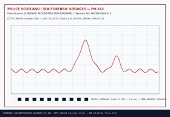
PH-162 (forensic-plates)
[FORENSIC RECONSTRUCTION DIAGRAM] PH-162: CCTV CAM-03 Corridor Still — OSD 22:22:32 (Tru
PH-163 (forensic-plates)
[FORENSIC RECONSTRUCTION DIAGRAM] PH-163: CCTV CAM-04 Unplugged Loss-of-Signal Frame — T
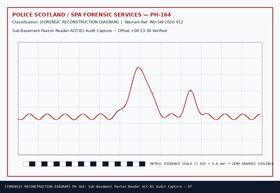
PH-164 (forensic-plates)
[FORENSIC RECONSTRUCTION DIAGRAM] PH-164: Sub-Basement Paxton Reader ACC-B1 Audit Captur
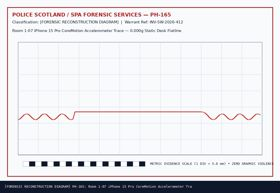
PH-165 (forensic-plates)
[FORENSIC RECONSTRUCTION DIAGRAM] PH-165: Room 1-07 iPhone 15 Pro CoreMotion Acceleromet
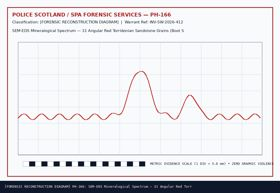
PH-166 (forensic-plates)
[FORENSIC RECONSTRUCTION DIAGRAM] PH-166: SEM-EDS Mineralogical Spectrum — 31 Angular Re
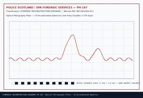
PH-167 (forensic-plates)
[FORENSIC RECONSTRUCTION DIAGRAM] PH-167: Optical Petrography Plate — 19 Uncarbonated Sp
PH-168 (forensic-plates)
[FORENSIC RECONSTRUCTION DIAGRAM] PH-168: GC-IRMS Clumped Isotope Chromatogram — Ampoule